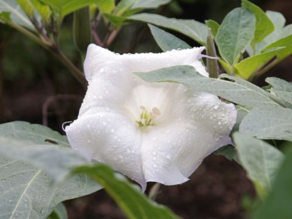

धतूराDhatura
Datura metel · Solanaceae · FLR-0015

- Scientific name
- Datura metel L.
- Family
- Solanaceae
- Hindi
- धतूरा
- Status here
- native
- IUCN
- not evaluated
When to look कब देखें
Present all year.
धतूरा / Devil's Trumpet
Datura metel L. — Solanaceae
धतूरा — शायद भारत का सबसे पौराणिक खरपतवार है। पूर्वी यूपी की हर सड़क पर उगता है और हर महाशिवरात्रि पर शिव को चढ़ाया जाता है। आयुर्वेद में दवा, अपराध में ज़हर — एक ही पौधा।
हिंदी परिचय Hindi Overview
धतूरा (Datura metel) एक देशी ज़हरीला पौधा है — Solanaceae परिवार का, यानी टमाटर, मिर्च, और आलू का रिश्तेदार। पूर्वी उत्तर प्रदेश की हर सड़क के किनारे, खाली पड़े मैदानों में, और गाँव के बाहरी हिस्सों में मिलता है।
इस पौधे की बड़ी, सफेद, तुरही जैसी फूल रात में खिलती है और सुगंध देती है — इसीलिए अंग्रेज़ी में "Devil's Trumpet" कहते हैं।
ज़हर: धतूरे में ट्रोपेन एल्कलॉइड होते हैं — एट्रोपिन, हायोसिन (स्कोपोलामाइन), और हायोस्सियामीन। ये पदार्थ तंत्रिका तंत्र को प्रभावित करते हैं। थोड़ी मात्रा में: शुष्क मुँह, फैली पुतलियाँ, तेज़ धड़कन, भ्रम। अधिक मात्रा में: बेहोशी, कोमा, मृत्यु।
शिव से संबंध: धतूरे की उत्पत्ति की कथा समुद्र मंथन से जुड़ी है — जब हलाहल विष निकला, शिव ने उसे पी लिया; धतूरा उनके शरीर से उत्पन्न हुआ। इसलिए धतूरा शिव का प्रिय पुष्प है — हर शिवलिंग पर चढ़ाया जाता है।
Quick Identification शीघ्र पहचान
| Feature | Description |
|---|---|
| Height & Habit | Stout, branching annual/perennial herb, 50–150 cm tall; stems often purple-tinged |
| Leaves | Large (10–20 cm long), ovate, asymmetric base, coarsely and irregularly toothed, dark green |
| Flowers | Large, erect funnel-shaped, 8–15 cm long, white to creamy-white; fragrant at night |
| Fruit | Round, spiny capsule, 3–5 cm diameter, covered with short, sharp spines |
| Seeds | Numerous, flattened, kidney-shaped, 3–4 mm long, pale yellow-brown |
| Odor | Strongly unpleasant and narcotic when leaves or stems are crushed |
Field tip: Look for a large, coarse, purple-stemmed weed with dark-green wavy leaves and huge, erect, trumpet-shaped white flowers. The spherical, spiny green seed capsule is the most reliable diagnostic feature. Datura stramonium is smaller with black seeds and different spines, while Brugmansia species (Angel's Trumpet) have hanging, pendant flowers.
Morphology आकृति विज्ञान
| Feature | Measurement |
|---|---|
| Plant height | 50–150 cm |
| Leaf length | 10–20 cm |
| Leaf width | 8–15 cm |
| Flower diameter | 8–15 cm |
| Fruit / seed dimensions | 3–5 cm (fruit diameter) |
Habit: Annual or short-lived perennial herb; erect, branching; 50–150 cm height. Stem hollow when mature; often purple-tinged.
Leaves: Simple, alternate; 10–20 cm long; ovate; base asymmetric; margin coarsely sinuate-dentate (irregularly wavy-toothed); both surfaces softly hairy; petiole 3–6 cm. Strong, unpleasant odour when crushed (characteristic of tropane alkaloid-bearing plants).
Flowers: Solitary, borne at branch forks. Calyx 5-lobed, tubular, 5–7 cm; falls off after anthesis leaving a characteristic persistent base ring on the fruit. Corolla white to creamy-white, funnel-form, 8–15 cm long; limb 5-lobed, twisted in bud. Nocturnal — opens at dusk, closes by midmorning. Very fragrant at night.
Fruit: A spiny capsule (berry-like) 3–5 cm diameter; densely covered in stiff, sharp spines 5–10 mm long. Opens by 4 valves when mature, releasing 100–200 seeds.
Seeds: Flattened, kidney-shaped, 3–4 mm; pale yellow-brown; very numerous.
हिंदी: तना खोखला — पुराना होने पर।
फूल: 8–15 सेमी — रात में खुलता है, सुबह बंद।
कैलिक्स: गिर जाती है — फल पर गोल निशान छोड़ती है।
बीज: एक फल में 100–200।
Chemistry and Toxicology रसायन और विषाक्तता
Tropane alkaloids: All parts of the plant — leaves, seeds, flowers, roots — contain:
- Atropine (racemic hyoscyamine) — blocks muscarinic acetylcholine receptors; used medically as a pupil dilator, antispasmodic, and cardiac resuscitation drug (0.5 mg IV in cardiac arrest)
- Scopolamine (hyoscyamine) — similar effects; used for motion sickness and as a surgical pre-anaesthetic
- Hyoscyamine — the dominant alkaloid in Datura metel
Poisoning syndrome (anticholinergic toxidrome): In humans, consuming any part causes:
- "Blind as a bat, dry as a bone, red as a beet, hot as a hare, mad as a hatter" — the classical description
- Mydriasis (dilated pupils); anhidrosis (inability to sweat); hyperthermia; tachycardia; urinary retention; severe hallucinations; seizures; coma
- Seeds are particularly dangerous — even a few seeds can cause severe poisoning in children
- Antidote: physostigmine (reverses anticholinergic effects)
Criminal use: "Datura poisoning" was documented across India as a method used by thieves and dacoits (dacoit = armed gang) to incapacitate travellers — mixed into food or drink. Colonial-era crime records from UP mention this repeatedly. Still occasionally reported.
हिंदी: एट्रोपिन — दिल की दवा भी, ज़हर भी।
पुतलियाँ फैलना, शुष्क मुँह, भ्रम, बेहोशी।
कुछ बीज ही बच्चे को बेहोश कर सकते हैं।
ऐतिहासिक अपराध: यात्रियों को धतूरा खिलाकर लूट।
Ecology and Pollination पारिस्थितिकी
Pollination: Nocturnal strategy. The large, fragrant, white flowers open at dusk and are primarily pollinated by hawkmoths — particularly the Convolvulus Hawk-moth (Agrius convolvuli), which hovers in front of the flower and inserts its long proboscis to reach the nectar. The nocturnally-opening, white, fragrant, long-tubed flower is a textbook hawkmoth syndrome.
Herbivory avoidance: The tropane alkaloids deter virtually all mammalian herbivores — cattle and goats ignore dhatura even when other plants are grazed bare. This gives the plant a competitive advantage in heavily grazed roadside environments.
Very few insects eat it — only some specialized insects have evolved resistance to tropanes. Spodoptera caterpillars (armyworms) occasionally consume dhatura. Most caterpillars avoid it.
Ecological niche: Aggressive pioneer on waste ground and disturbed soil. Often the first large plant to colonize a freshly disturbed roadside. Its large leaves shade out smaller competitors.
हिंदी: परागण: hawkmoth (भृंगराज पतंगा) रात में।
सफेद + सुगंध + रात में खिलना = hawkmoth के लिए संकेत।
गाय-बकरी नहीं खाते — ज़हर की वजह।
उजड़ी ज़मीन पर सबसे पहले उगता है।
Life Cycle / Phenology जीवन चक्र
- Germination: Year-round in warm conditions; peak germination at onset of monsoon (June)
- Vegetative growth: Rapid — reaches full height in 8–12 weeks
- Flowering: Year-round in eastern UP; peak August–October; flowers open at dusk, last one night
- Fruiting: Fruits develop over 4–6 weeks; mature September–December
- Seed dispersal: Explosive capsule dehiscence; spiny surface catches on animal fur (zoochory); also wind and water
- Persistence: Seeds dormant in soil for years — difficult to eradicate once established
- Lifespan: Annual to short-lived perennial; can overwinter in mild conditions
हिंदी: जून में अंकुरण — मानसून के साथ।
8–12 हफ्ते में पूरा पौधा।
फूल: शाम को एक रात।
बीज: साल तक मिट्टी में जीवित।
Agricultural / Human Relevance कृषि और मानव संबंध
Religious use: Dhatura leaves and flowers are offered to Lord Shiva — particularly at Mahashivaratri. This is probably the most widespread ritual use of a toxic plant in India. The offering is not consumed; the religious context is purely symbolic.
Ayurvedic medicine: Carefully prepared extracts used for:
- Asthma — dried leaves burned and smoke inhaled (bronchodilating effect of atropine); this works pharmacologically but is now replaced by modern inhalers
- Pain relief — leaf poultices for local pain; seeds ground into preparations
- Surgery — historically, controlled doses used as anaesthetic/sedative
Modern pharmaceutical source: Atropine, derived from Datura and related Atropa species, is on the WHO Essential Medicines List. It is the antidote to organophosphate poisoning (the same class as many pesticides) — a medical irony that the plant used in criminal poisoning provides the antidote to industrial poisoning.
Pest management relevance: Dhatura leaf extract in water (leaf-soaked water sprayed on crops) has traditional use as a botanical pesticide against aphids and caterpillars. Partially effective. Not recommended for consumption-crop use due to residue concerns.
हिंदी: शिव को फूल — महाशिवरात्रि।
आयुर्वेद: दमा में धुआँ, दर्द में पत्ती।
एट्रोपिन: WHO आवश्यक दवा — ऑर्गेनोफॉस्फेट विष का इलाज।
खेत में पत्ती का काढ़ा — कीट नाशक।
Expected Locally स्थानीय रूप से अपेक्षित
Not a field record. Written from published accounts for eastern Uttar Pradesh. No confirmed local sighting yet — if you have seen it, that is what the atlas needs.
अभी तक स्थानीय पुष्टि नहीं। यह विवरण प्रकाशित स्रोतों से है, किसी अवलोकन से नहीं।
| Date | Location | Notes |
|---|---|---|
Distribution वितरण
Global range: Probably native to the Americas, but now widely naturalized throughout the tropical and subtropical regions of the world, including Asia, Africa, and southern Europe.
In India: Found as a common ruderal weed across all states and union territories in the plains and lower hills.
In Uttar Pradesh: Extremely common along roadsides, railway tracks, village borders, waste ground, and temple courtyards in all districts.
In Basti district / eastern UP: Abundant as a pioneer species on disturbed soils, waste lots, and field margins; often deliberately planted near village temples.
Range notes: No significant range changes documented; remains stable as a common roadside weed.
Research Questions शोध प्रश्न
Anyone can investigate these | कोई भी इन प्रश्नों की जाँच कर सकता है
- What time does dhatura flower open each evening? / धतूरे का फूल शाम को कितने बजे खुलता है? — Observe one plant for 5 consecutive evenings; record exact opening time. Does it vary with temperature or cloud cover?
- Which hawkmoth species visits dhatura in your area? / आपके क्षेत्र में कौन सी hawkmoth धतूरे पर आती है? — Sit near a flowering plant from 7–10 PM with a torch; photograph any hovering moths.
- Does dhatura increase on roadsides after road widening or construction? / सड़क चौड़ीकरण के बाद धतूरा बढ़ता है? — Survey 1 km of recently disturbed road margin vs. 1 km of undisturbed margin; count plants.
- Do animals avoid dhatura when other plants are grazed nearby? / जब जानवर पास में चर रहे हों तो धतूरा बचा रहता है? — Survey 5 roadsides with grazing; count dhatura plants in grazed vs. ungrazed sections.
- Is dhatura used in traditional medicine or rituals in your village? / आपके गाँव में धतूरे का पारंपरिक उपयोग है? — Interview 5 elders; document any use (religious, medicinal, or otherwise).
Similar Species मिलती-जुलती प्रजातियाँ
| Species | How to tell apart | हिंदी |
|---|---|---|
| Datura stramonium (Jimsonweed) | Smaller plant; white or purple flowers; capsule spines unequal (longer at top); seeds black; introduced from Americas | छोटा धतूरा — काले बीज |
| Brugmansia spp. (Angel's Trumpet) | Flowers drooping downward (pendant); cultivated ornamental; not wild on roadsides; tree-like | बड़ा धतूरा — नीचे झुके फूल (बाग में) |
| Datura innoxia (Sacred Datura) | Similar to metel; flowers slightly smaller; native to Americas; rarer in UP | वैसा ही — लेकिन दुर्लभ |
Field rule: Large roadside herb + large funnel-shaped white flower opening at dusk + large spiny round fruit + strong smell = Datura metel. The spiny capsule is the single most reliable feature — nothing else common in eastern UP has it.
Taxonomy & Classification वर्गीकरण
Original description. Datura metel was described by Carl Linnaeus in 1753 in Species Plantarum 1: 179. Type locality: "Habitat in India" (in India). The genus name Datura is derived from the Sanskrit word dhattura or dhatura for the plant.
Subspecies. Monotypic — no subspecies are currently recognised.
Family and order placement. Belongs to the order Solanales, family Solanaceae, subfamily Solanoideae, tribe Datureae. Solanaceae (the nightshade family) is a large, economically important family of flowering plants within the order Solanales, containing about 90 genera and 2,500 species, including potato, tomato, and eggplant.
Phylogenetic notes. The genus Datura forms a well-supported monophyletic group within the tribe Datureae. Molecular analyses indicate that Datura metel is closely related to species originating in the Americas, prompting discussions on whether it was introduced to Asia pre- or post-Columbian exchange.
IUCN status rationale. This species has not been formally assessed by the IUCN Red List. As a widespread ruderal weed, its populations are stable and expanding across the Gangetic plain, faces no conservation threats, and is not of conservation concern.
Photo Gallery फोटो गैलरी
Note: Add field photos tomedia/species/datura/
फोटो निर्देश: सफेद फूल (शाम को — खुला), काँटेदार फल (हरा और पका दोनों), पत्ती (close-up), और hawkmoth यदि दिखे।
Photos needed आवश्यक फोटो
- [ ] Open flower — evening, showing funnel shape (खुला फूल — शाम)
- [ ] Spiny fruit — green (हरा काँटेदार फल)
- [ ] Ripe splitting capsule with seeds (पका फल — बीज दिखाते)
- [ ] Full plant on roadside (पूरा पौधा — सड़क पर)
- [ ] Leaf close-up (पत्ती — close-up)
Atlas Connections संबंधित प्रजातियाँ
- Lantana — shares roadside disturbed habitat; both are chemically defended weeds that compete in the same niche (FLR-0007)
- Congress Grass — shares roadside niche; often co-occurs on the same disturbed margins (FLR-0001)
- Neem — sometimes grows near neem tree bases in village margins; shares semi-shaded disturbed habitat (FLR-0009)
References संदर्भ
- Linnaeus, C. (1753). Species Plantarum, 1: 179. Laurentii Salvii, Holmiae.
- Chopra, R.N., Nayar, S.L. & Chopra, I.C. (1956). Glossary of Indian Medicinal Plants. CSIR, New Delhi.
- Sharma, S.K. & Singh, V.K. (2012). The toxicity profile of Datura alkaloids. Toxicology International, 19(3): 215–220.
- Botanical Survey of India — Flora of Uttar Pradesh.
- Hooker, J.D. (1882). Flora of British India, Vol. 4. L. Reeve & Co., London.
- GBIF Occurrence Data — Datura metel, India (2026).
Source file: species/flora/weeds/datura.md